2026-10-23
VOL 388
读者，早。
另一边，Ai2 把全球卫星嵌入开放给更多人，微软与 Hugging Face 让数据库的最终状态成为训练奖励；研究者可以更清楚地检验模型到底完成了什么。选举信息的报道则提醒我们，流畅答案一旦指向错误的捐款或投票信息，出错者和承担后果的人并不相同。今天的消息没有单一赢家，检验方法却正在变得具体。
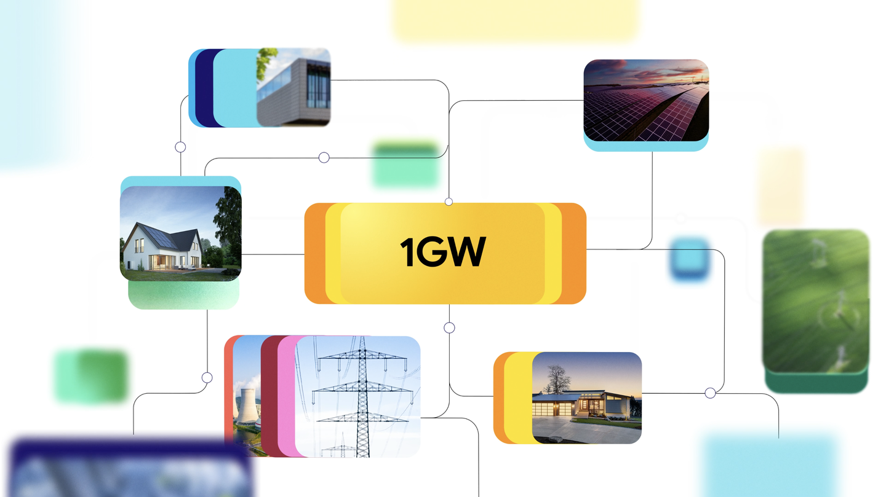
Google 与 Voltus 扩大合作，计划在美国 PJM 电网区域建设 1GW 虚拟电厂，规模是此前 100MW 协议的十倍。Voltus 聚合家庭和企业的恒温器、电池及工业负载，在用电高峰临时减少需求，参与者获得账单优惠或现金。Google 称该区域覆盖 13 州及华盛顿特区、约 6700 万人；这是容量协议，并非今天已有 1GW 稳定发电。
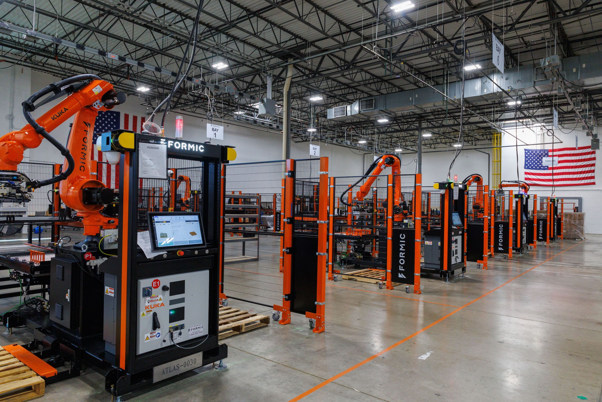
工业机器人服务商 Formic 宣布获得 5000 万美元增长资金，包含 Mercato Partners 领投的 B 轮和 S2G 的债务融资。公司称其机器人已在美国 30 多州、100 多处设施运行逾 75 万小时，采用按月付费、包含部署和维护的 Robot-as-a-Service 模式；资金将支持从固定工序走向更通用的机器人应用。99.6% 可用率和 97% 续约率均为公司披露，尚非独立审计。
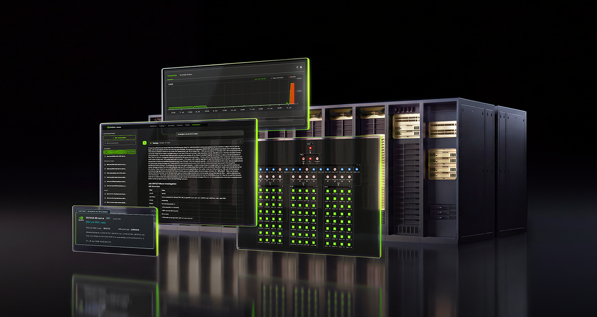
NVIDIA 发布 AIOps 平台 Minerva，将 GPU、网络、存储、调度器和训练任务的遥测数据放进动态知识图谱，目标是把异常定位到具体部件和作业。公司称系统每小时可分析数十亿数据点，并能汇总连锁警报；IREN 正在使用，IBM、Lambda 等伙伴计划部署。文中没有给出跨客户的量化停机改善数据，自动修复也可由人决定是否执行。
微软与美国公共图书馆协会宣布免费 AI 素养计划，面向图书馆工作人员和读者提供培训、网络研讨会及同行交流，内容包括核查 AI 生成信息、保护个人数据和识别偏差。计划依托协会网络展开，原文尚未列出覆盖馆数、课程完成率或独立学习效果。

Cohere 的 Model Vault 加入保密计算公测，使用 Azure 上的 NVIDIA H100 机密计算能力。客户侧软件在发送敏感请求前核验硬件、固件和软件的签名证据；请求载荷在传输与推理过程中加密，目标是让云平台运营者也看不到明文。Cohere 明确指出，这种硬件边界并不能替代应用安全、合同控制与数据驻留要求。
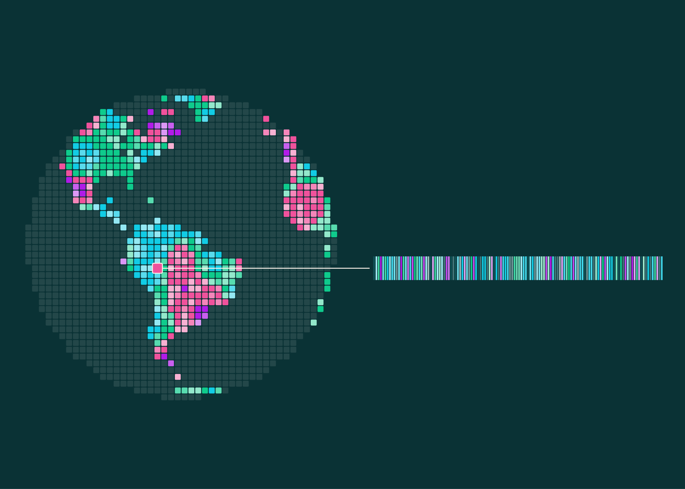
Ai2 发布 OlmoEarth v1.3 及预先计算的全球年度卫星嵌入，覆盖 2023 至 2025 年全球陆地和近岸水域，10 米分辨率、每像素 64 或 128 维；更早年份仅覆盖部分国家。团队称 128 维版本在 27 项评测中有 20 项领先，模型权重、预训练数据与代码均开放。新浏览器工具可在地图上比对年份、标少量样本并导出分析结果；嵌入代表模型特征，具体地物判断仍需核实原始影像。
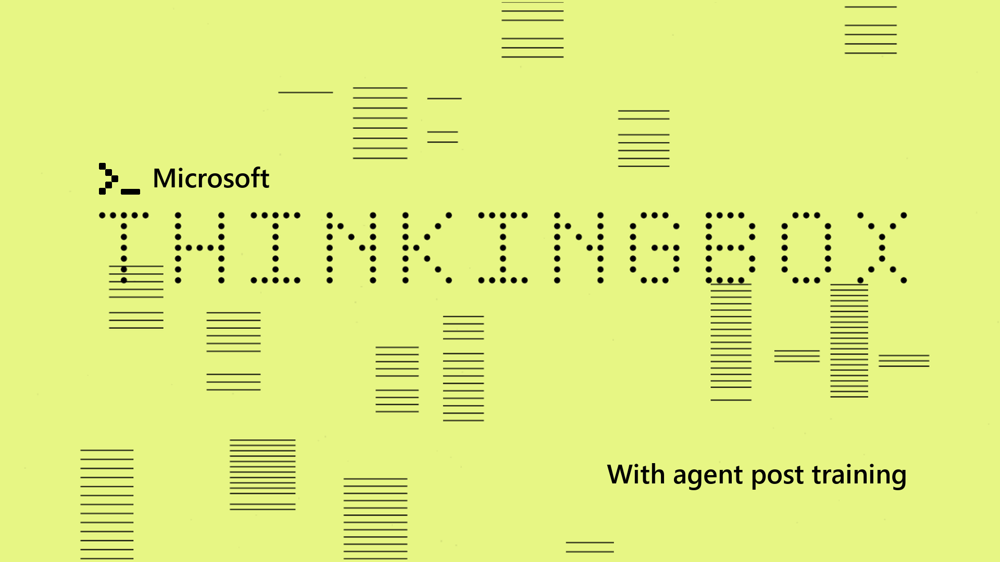
微软与 Hugging Face 发布 ThinkingBox-Training，把智能体操作后数据库的最终状态变成可执行的奖励信号。在独立于训练池的 507 项任务上，团队称 Qwen3.8-27B 经 50 步 GRPO 后，平均成功率由 51.70% 升至 60.78%；20 次都完成正确的任务数由 38 增至 107。结果来自该基准，不能直接推断其他数据库或企业流程同幅改善。
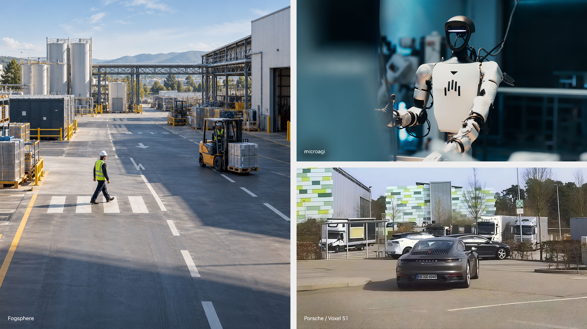
NVIDIA 扩充 Cosmos Data Factory 的多模态数据处理和五套云端蓝图，也开放新的 Cosmos 3 Nano 仿真模型变体与训练、部署工具。公司称 Porsche 预计减少最多 90% 的重复实体试驾、缩短最多 85% 开发周期；这些是合作方预期，不是已完成的独立实测。更新还包括经验证配置下最多两倍的 NIM 推理速度。
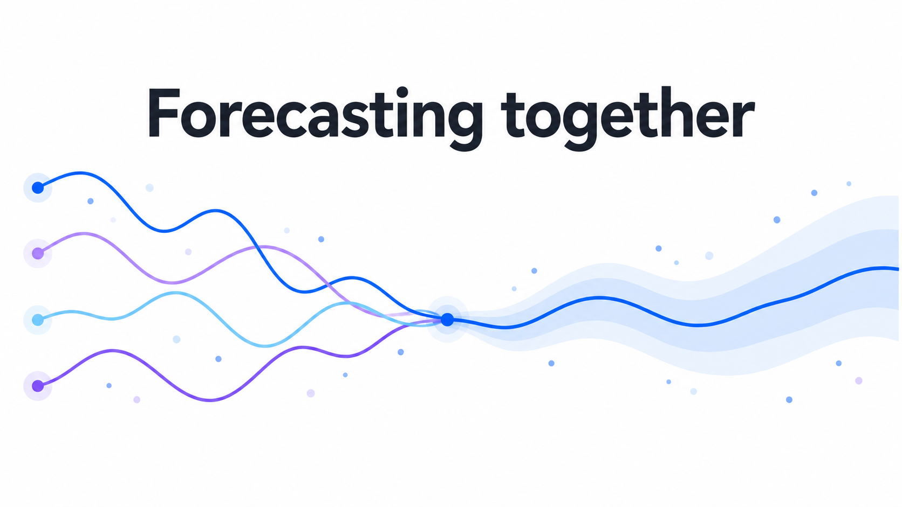
IBM Research 发布 Granite Timeseries Ensemble R1，把四种已有架构接进一套可扩展的预测接口，无须为每组数据重新训练集合权重。团队在 GIFT-Eval 的 97 种配置上比较，默认等权方案的整体 MASE 为 0.683，优于参与对照的单模型最佳 0.685；概率预测指标则由单独的 PatchTST-FM-r2 更好。集合需加载四份模型，推理时间与内存也高于单模型。
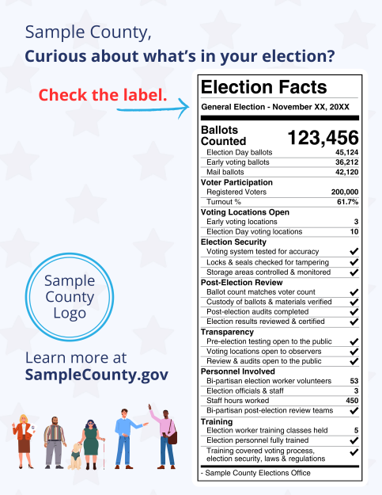
《大西洋月刊》调查发现，美国选民在 Google 的 AI 搜索回答中点击一条看似支持得州参议员候选人 James Talarico 的捐款链接，钱却流向另一名候选人的募款页面；报道确认至少三人共捐 1011 美元，页面后来被移除，相关竞选团队转交了款项。文章还引述 Forum AI 尚未公开的测试：约四成选举问题回答至少有一处事实错误。该测试在八月进行，平台称随后改进了选举信息来源，因此不能把旧测试直接当成现在的错误率。
NVIDIA 展示欧洲金融机构的自建模型案例：Revolut 以 PRAGMA 支撑面向首批 8000 万客户的系统，Starling Bank 在英国本地云训练交易模型，Lloyds 将海量交易转为通用表征。NVIDIA 还称 Stripe 在离线测试中用 GPU 加速的数据管线获得 42 倍速度和 92% 成本节省；不同机构、不同工作负载的数据不可直接横向比较。
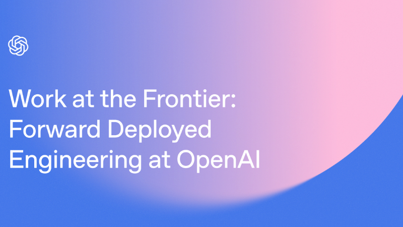
OpenAI 驻场工程负责人披露客户案例：一项半导体验证合作先由约 15 名工程师为十多个场景建评测与专用工具，数月后把应用搬到以 Codex 为核心的公共框架，称移除了约 90% 的定制代码。另一个语音客服项目的关键评测分数在六个月内由约 60% 提高到 90% 以上。数字均是 OpenAI 与客户项目自述，不代表一般客户部署速度。
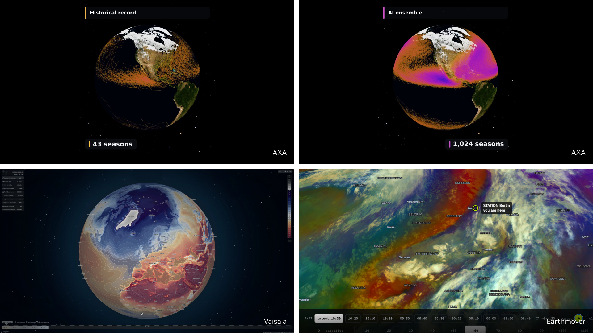
NVIDIA 展示 Earth-2 在欧洲的区域天气应用，并介绍新加入模型家族的 StormScope EU：它使用 EUMETSAT 卫星观测，对 16 个 Meteosat 通道的云况每 10 分钟作短时预测。AXA 将 FourCastNet 3 用于上千个模拟飓风季的风险研究，曼彻斯特大学把 CorrDiff 用于英国空气质量建模；这些仍是各机构的具体试用，不能代替官方天气预报准确率评估。
NVIDIA 介绍 DSX 平台的新合作，试图把变电站、电网负荷、冷却和机架一起模拟与调度。公司引用美国超过 200GW 项目排队并网、逾 3000 亿美元设备积压的背景；Phaidra 声称在同一电力包络内多获得约 10% 计算量，Emerald AI 的模型则估计可释放最多 100GW 既有电网容量。这些是企业披露和建模估计，并非已验证的全国新增供电。
Google Marketing Platform 公布首期产品更新：Display & Video 360 的 Marketplace 用 Gemini 模型组合个性化媒体包，加入 LinkedIn 联网电视广告库存；新的 Search Ads 360 首页也借 Gemini 汇总洞察并生成建议。原文没有披露这些功能对广告主转化率的独立提升，Gartner 排名属于另一项评估，不能当作功能效果。
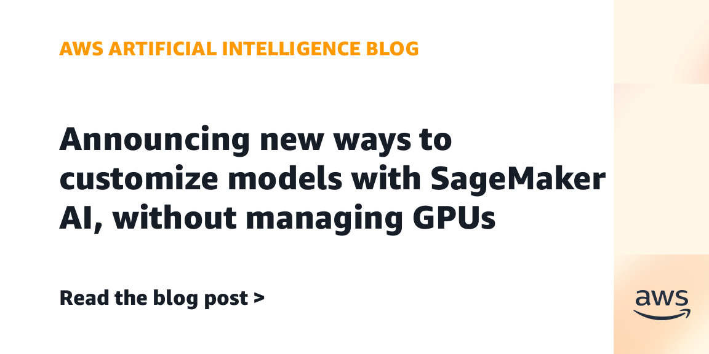
AWS 宣布 SageMaker AI Training Sessions 正式可用。开发者可写自己的损失函数、奖励信号和训练循环，SageMaker 负责 GPU 分配、分布式执行、故障恢复与检查点；支持的模型包括 gpt-oss-20b、Gemma 4 31B 及 Qwen 3.6/3.8 27B。服务按处理的 token 计费，但 AWS 未给出有代表性的整次训练总成本；客户仍须定义有效奖励并检验模型在新任务上的表现。
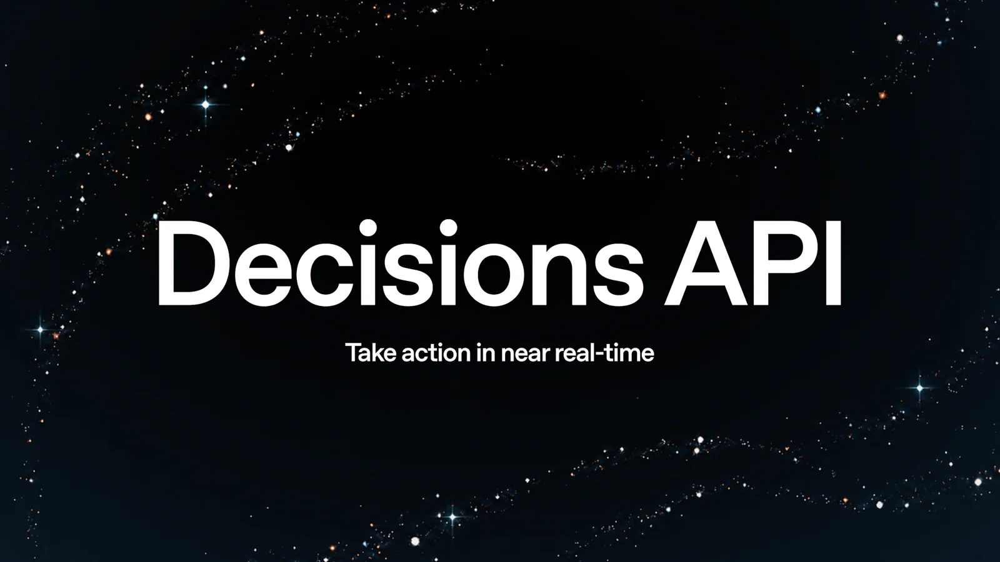
OpenAI 宣布 Decisions API 正式可用，以 GPT-6 Luna 处理答案受限定的小决策，例如分类、预设选项选择和评分。输入可含文字、图像与 JSON，一次请求最多提出 400 个问题，并与 GPT-Live 集成。官方称相对通过 Responses API 使用 Luna 最快可达十倍；价格为每百万输入 token 0.10 美元、缓存输入 0.01 美元，不收输出 token 费。客户案例中的速度和准确率来自各自评估，不能直接互相比较。